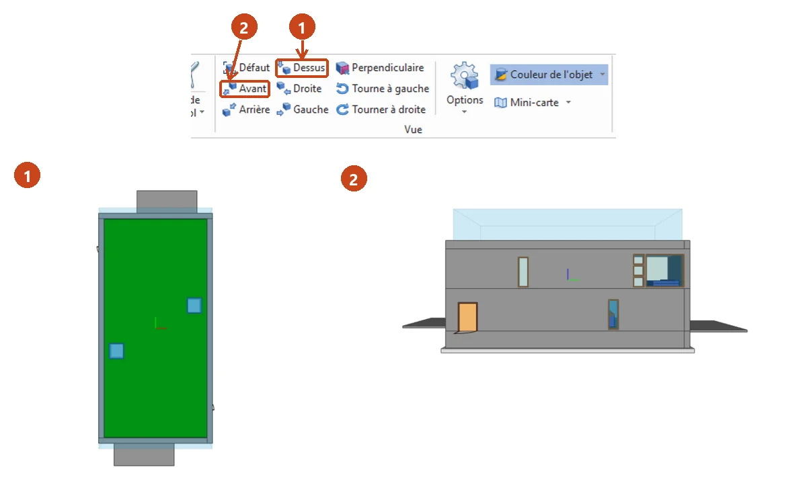
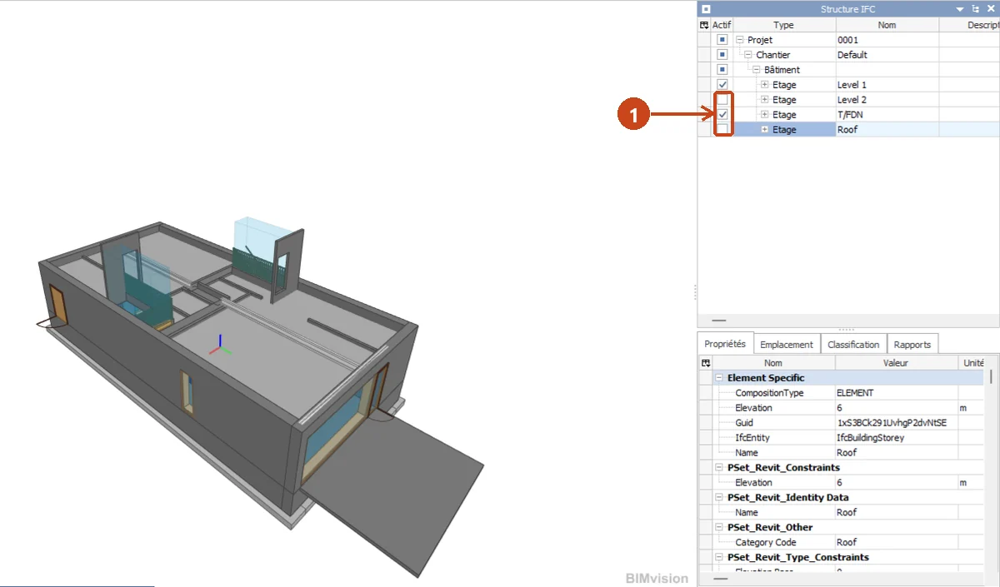
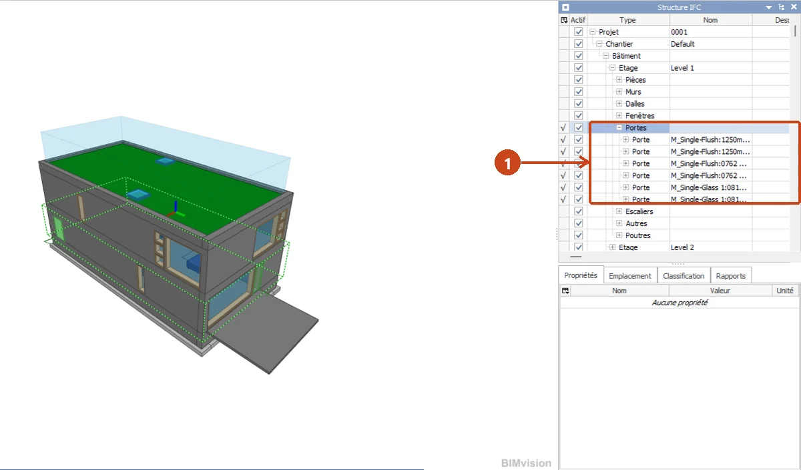
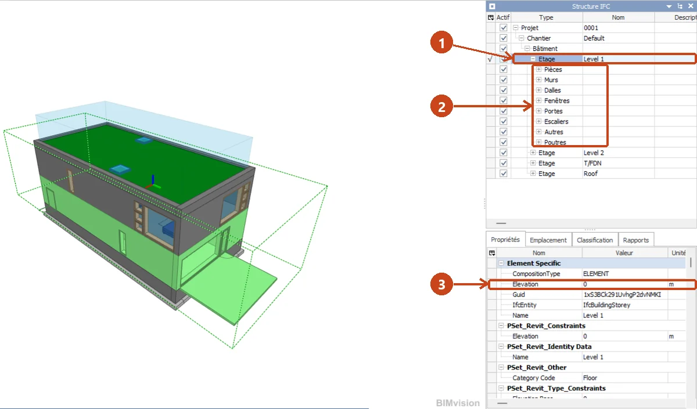
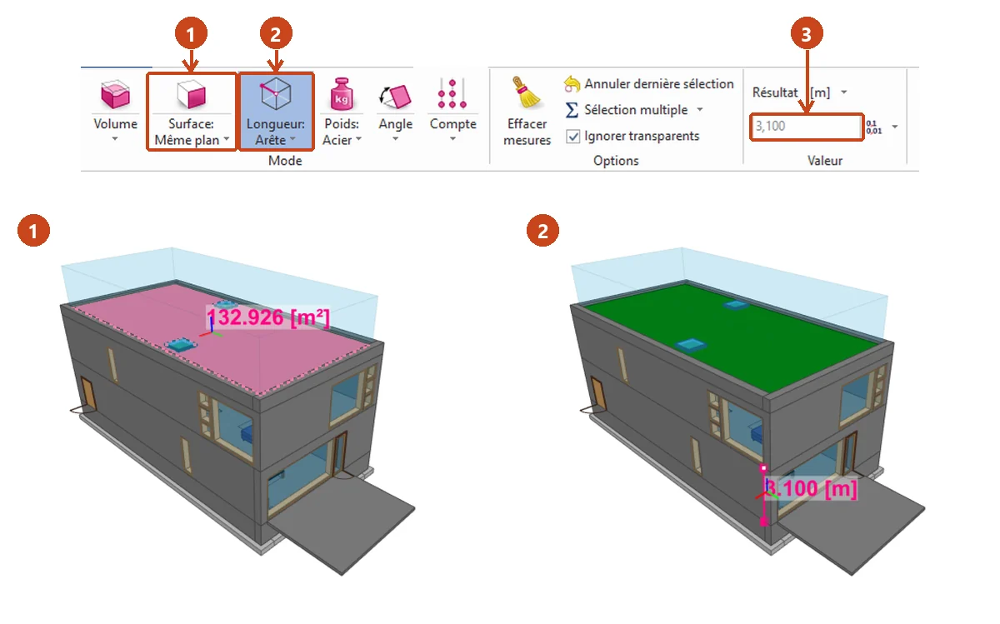
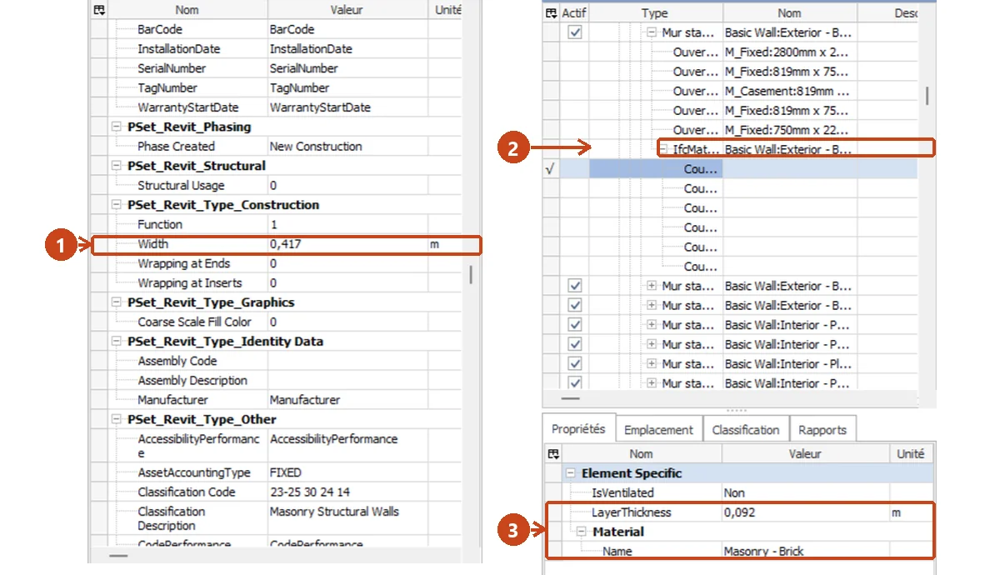

⬅ La ligne Lire les plans · Étanchéité des toitures

En gare 9, vous avez appris dix gestes dans BIM Vision, sur la maquette Duplex. Son toit est une toiture plate végétalisée, bordée d'acrotères.
Environ 2 heures sur poste, test compris. À la fin, vous saurez :
Comment travailler. Lisez les écrans 2 à 9 : chaque geste a sa méthode et un exemple résolu sur un autre élément de la même maquette. Faites ensuite la fiche de TP sur la toiture : chaque question dit l'écran à relire. La leçon existe aussi sur papier, avec les mêmes numéros d'écran (bouton « Leçon (PDF) » en haut de la gare).

Ouvrez la maquette Duplex comme en gare 9, geste 1 : « FICHIER », « Ouvrir », puis le fichier Duplex_A_20110907.ifc. La maquette a quatre étages : Level 1 (rez-de-chaussée), Level 2 (étage), T/FDN (fondations) et Roof (toiture).
Je décoche Level 1, T/FDN et Roof. Il reste le Level 2, l'étage des deux logements, ouvert par le haut.
La capture montre le même geste : Level 2 et Roof décochés, le rez-de-chaussée reste.

Sur l'étage Roof, trois familles intéressent l'étancheur :
Je déplie l'étage Roof, puis sa famille Murs. Je compte 4 lignes Basic Wall:Exterior - Brick on Block. La toiture est bordée de 4 acrotères, un par côté.

Je clique la ligne Level 2. Je lis Elevation : 3,1. J'écris 3,10 m : c'est la même valeur, avec deux chiffres après la virgule. Le plancher de l'étage est à 3,10 m.
Je clique le grand mur de façade du Level 2. Je lis Unconnected Height : 2,9. Ce mur mesure 2,90 m de haut.
La capture montre la ligne Elevation du Level 1, qui vaut 0.

Je clique « Surface », puis la face extérieure du grand mur de façade du Level 2. La face se colore et sa surface s'affiche dans la case « Résultat », en m².
Je contrôle : je clique le mur, la ligne Area de ses propriétés vaut 41,357137 m². Avec trois chiffres après la virgule, j'écris 41,357 m². Sur un mur, les deux valeurs peuvent différer un peu, selon la face cliquée.
Pour la toiture, mesurez avec « Surface » et recopiez ce que votre écran affiche. Contrôlez ensuite avec la ligne Area des propriétés de la toiture : les deux valeurs concordent.

| N° | Material | LayerThickness |
|---|---|---|
| 1 | Masonry - Brick | 0,092 m |
| 2 | Misc. Air Layers - Air Space | 0,025 m |
| 3 | Insulation / Thermal Barriers - Rigid insulation | 0,050 m |
| 4 | Masonry - Concrete Block | 0,193 m |
| 5 | Metal - Stud Layer | 0,041 m |
| 6 | Plasterboard | 0,016 m |
Somme : 0,092 + 0,025 + 0,050 + 0,193 + 0,041 + 0,016 = 0,417 m. La ligne Width du mur vaut 0,417 : la somme concorde, le contrôle est bon.
La pile de Toiture 2, de haut en bas : protection, étanchéité, isolant, pare-vapeur, forme de pente, porteur. Pour ranger une couche de la maquette, lisez son Material après le premier tiret, puis cherchez son mot dans ce tableau. Le mot peut suivre un second tiret : Wood - Sheathing - plywood se range par plywood.
| Mot anglais du Material (traduction) | Place dans la pile |
|---|---|
| Grass (herbe), Gravel (gravillon) | protection |
| Membrane, EPDM (caoutchouc), Bitumen (bitume) | étanchéité |
| insulation (isolant) | isolant |
| Vapor Retarder (pare-vapeur) | pare-vapeur |
| Tapered, Slope (en pente) | forme de pente |
| Concrete (béton), Steel Deck (bac acier), plywood (contreplaqué), Lumber (bois de charpente) | porteur |
Si le mot n'est pas dans le tableau, écrivez « à demander ». Posez la question avant de commander le matériel (gare 7).
Site - Grass : le mot après le tiret est Grass, l'herbe. C'est la protection.
Masonry - Concrete Block, couche 4 du mur : Concrete, le béton. Le tableau le range dans porteur.
Misc. Air Layers - Air Space, couche 2 du mur : Air Space n'est pas dans le tableau. J'écris « à demander ».
Comparez ensuite : une couche de la pile sans aucune ligne dans la maquette est une couche non représentée dans la maquette. Le pare-vapeur se trouve sous l'isolant : une couche « à demander » placée au-dessus ne le remplace pas. Pour signaler une couche non représentée, écrivez une question qui nomme la couche, puis ajoutez ce que montre la maquette. Exemple sur un autre élément : « Un isolant est-il prévu sous la dalle du rez-de-chaussée ? La maquette n'en montre pas. »
Le relevé d'étanchéité monte contre l'acrotère. Sa hauteur possible se calcule avec trois valeurs lues dans la maquette.
Dans le Duplex, la toiture et les acrotères partent tous deux du niveau de l'étage Roof. Vérifiez-le : cliquez la toiture et lisez Base Level ; cliquez un acrotère et lisez Base Constraint. Les deux valent Roof.
Elevation de l'étage : 3,00 m. Épaisseur de la toiture : 0,40 m. Hauteur des acrotères : 0,60 m.
Dessus de la toiture : 3,00 + 0,40 = 3,40 m. Haut de l'acrotère : 3,00 + 0,60 = 3,60 m.
Hauteur possible du relevé : 3,60 − 3,40 = 0,20 m, soit 200 mm. La consigne demande 150 mm au moins : 200 mm suffit, avec 50 mm de marge.
Dans les exercices de cette ligne, le relevé dépasse la protection d'au moins 150 mm (Toiture 2). En cas d'écart avec le plan coté au dernier indice, le plan coté l'emporte (gare 3).
Gardez cet écran sous les yeux pendant le TP.
| Étape | Geste | Écran |
|---|---|---|
| 1 | Garder l'étage Roof seul actif | 2 |
| 2 | Déplier les familles, compter les lignes | 3 |
| 3 | Lire Elevation et Unconnected Height | 4 |
| 4 | Mesurer la surface de la toiture | 5 |
| 5 | Lire les couches, additionner, contrôler | 6 |
| 6 | Ranger les couches, écrire la question | 7 |
| 7 | Calculer la hauteur possible du relevé | 8 |
Écrivez chaque valeur avec son unité, et chaque calcul en entier : 3,00 + 0,40 = 3,40 m.
Répondez à tout, votre score s'affiche en bas.
Vous savez isoler une toiture dans la maquette, lire ses couches, la mesurer et vérifier la hauteur de son relevé.
Télécharger la leçon papier (PDF) Télécharger la fiche de TP (PDF)
Pour l'enseignant, le corrigé est dans l'espace enseignant, sous code. La fiche fait relever, sur la toiture du Duplex, ses éléments, ses six couches, sa surface et la hauteur possible de son relevé.
Gare suivante : surfaces et quantités, Toiture 5.